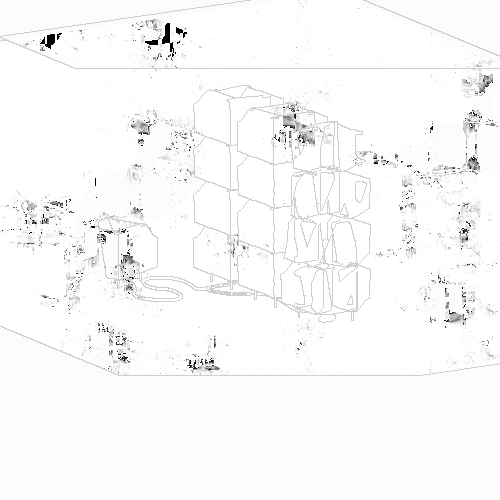
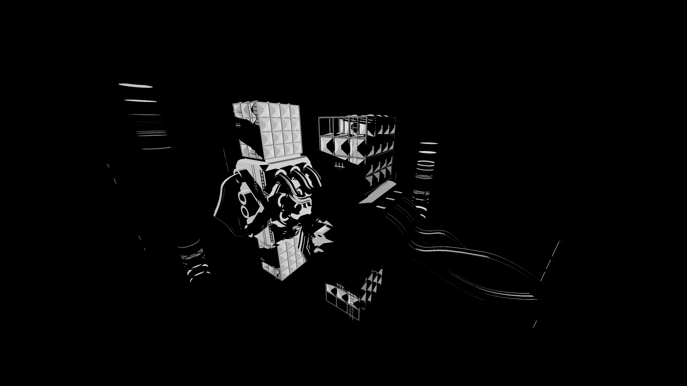
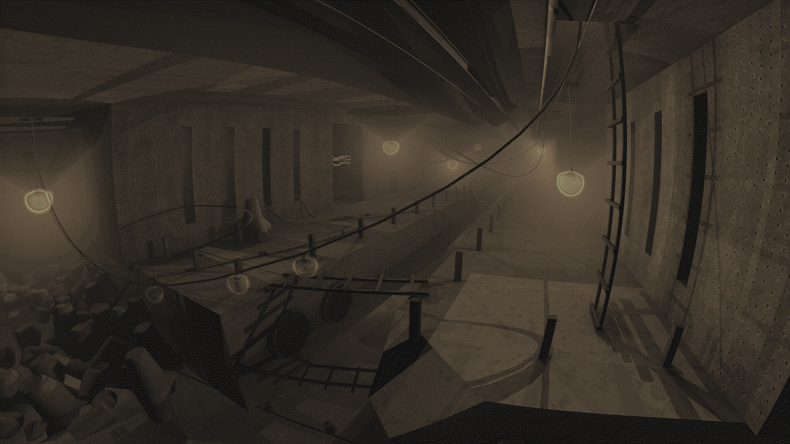
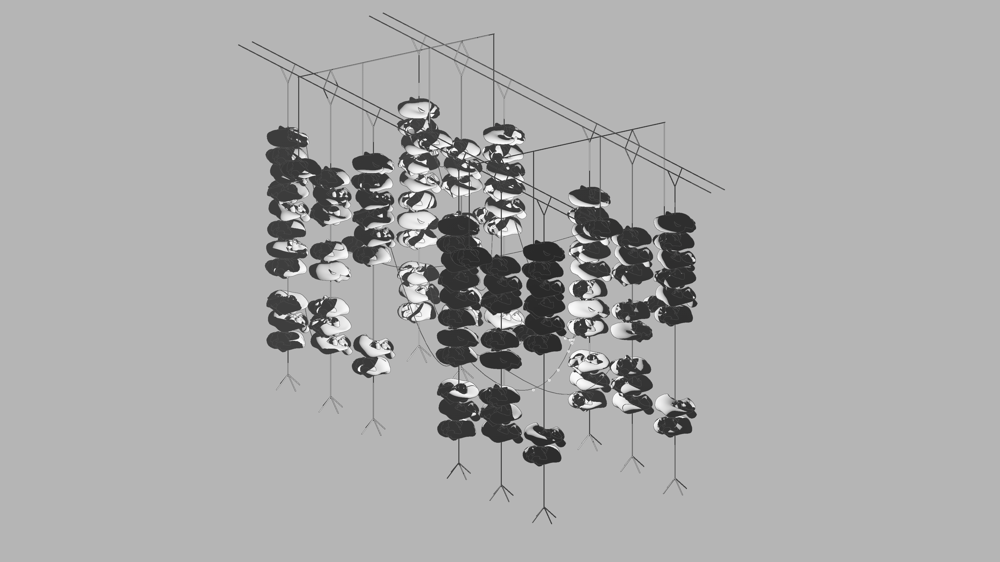
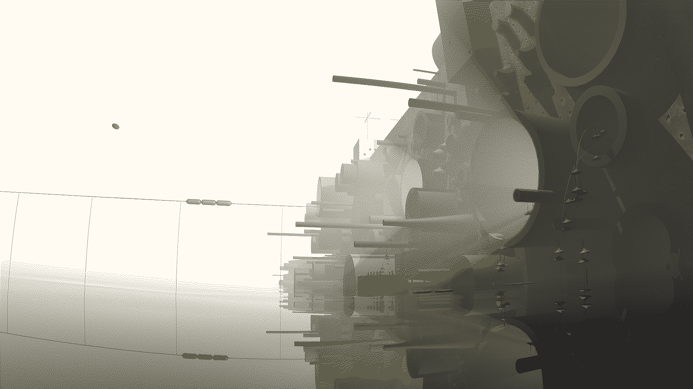

visual/3d/structure/2020
2020.01 Scanning Hostels Inside & Outside
this was one of my first experiments with exploring "slices", and the artistic implications of them. in these two .gifs i was interested in how a "inanimate" buildings might become living when being examined with the same tools we use to study on humans.


2020.05 Deep Organics Filtration
this image is a digital reconstruction of areuvelian filtration units that were installed in points of prominent biomass.

2020.05 Inquilt Hall
this image was the first of my inquilt series, but not officially "canon" with them in terms of aesthetic. this is why i have not included it as part of the illustration archive.

2020.05 Skewer Apartments
an experimental sort of developmental housing

2020.05 Soen Circulatory
this image is a digital reconstruction of a soen circulatory, which is part of a complex of interconnected structures scattered throughout the ocean to act as miniature cities maintaining the magnetic transit system of the same name.

2020.06 Ocith Alley
this image is a digital reconstruction of an ocithian "neighborhood" deep within the lower levels of the megastructure.

about | contact | source